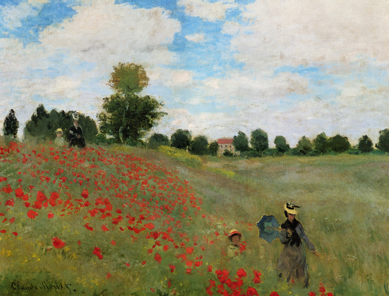
Amapolas en los alrededores de Argenteuil
- Artista: Claude Monet (1840 - 1926)
- Estilo artístico: Impresionismo
- Obra: Amapolas en los alrededores de Argenteuil (1873)
- Tamaño: 65 x 50 cm
- Técnica: Óleo sobre lienzo
Les doy la bienvenida a Encuadrado, un espacio pensado para quienes creen que las paredes vacías son solo historias esperando a ser contadas. Aquí no vendemos simples cuadros: creamos piezas que transforman ambientes, despiertan emociones y reflejan la personalidad de quienes deciden escogerlas.
¿No sabes que cuadro elegir? cuéntame qué estilo te gusta o qué ambiente quieres decorar y te doy una idea.

Amapolas en los alrededores de Argenteuil
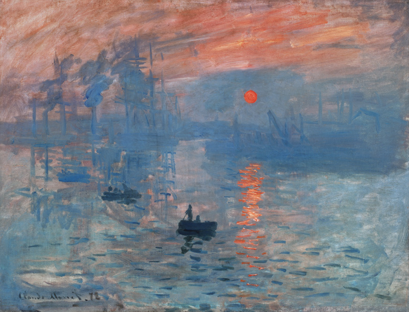
Impresión, salida del sol
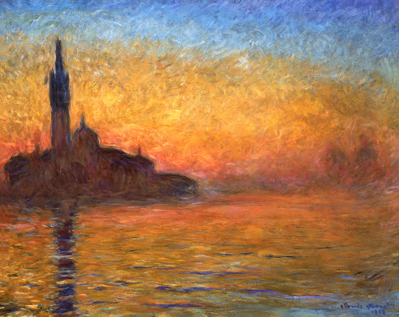
San Giorgio Maggiore al anochecer
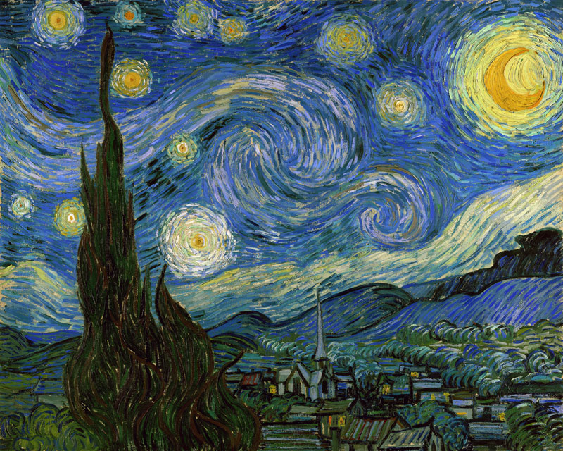
La noche estrellada
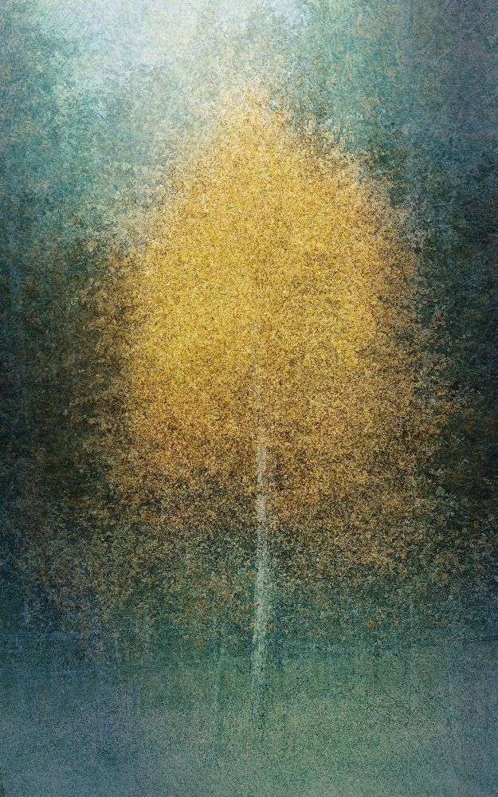
Young at heart
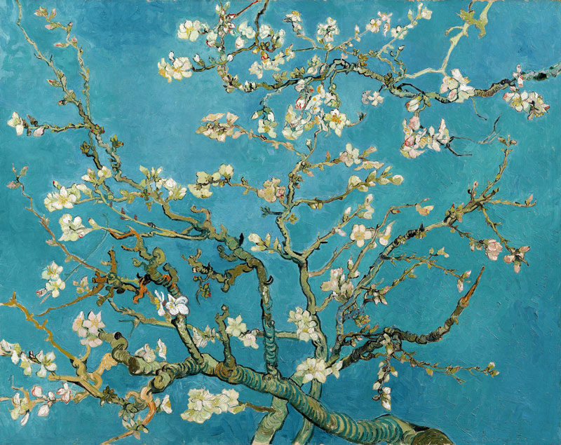
Almendro en flor
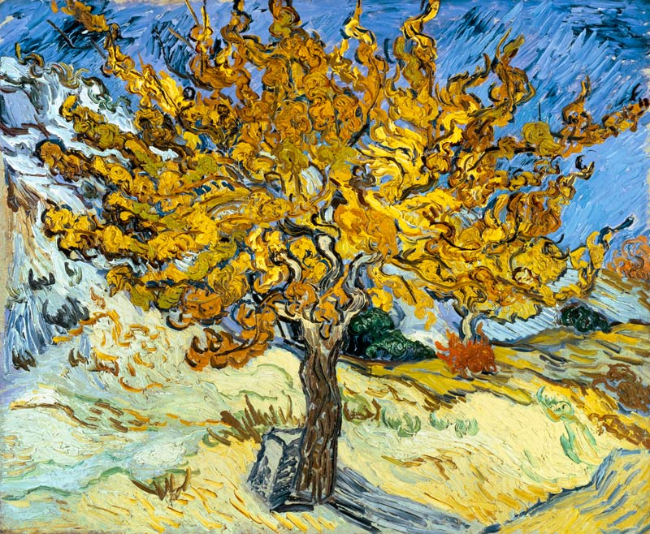
La morera
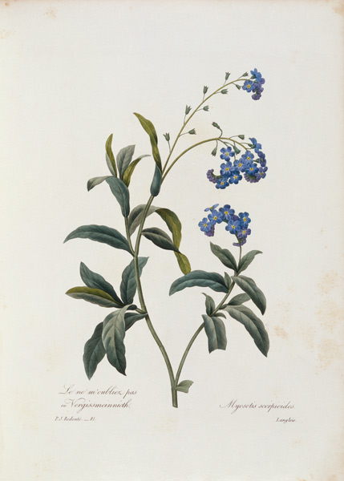
Forget me not
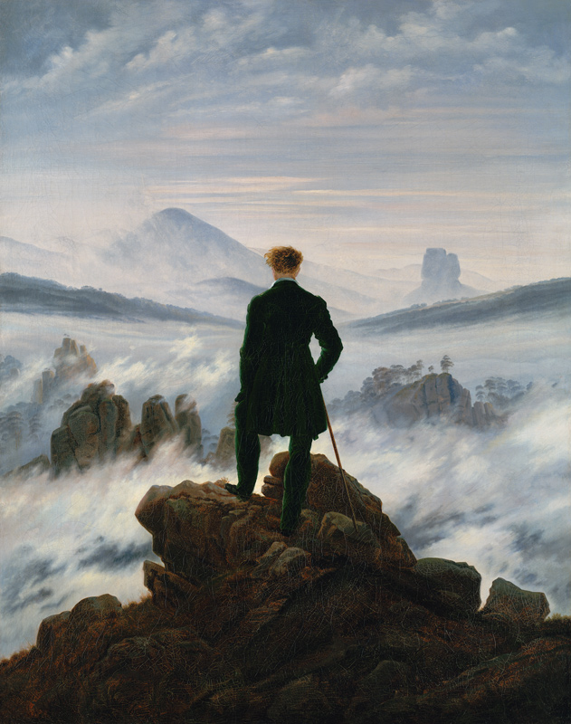
Caminante sobre el mar de niebla
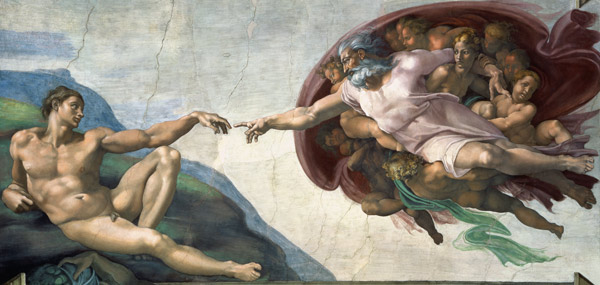
La creación de Adán
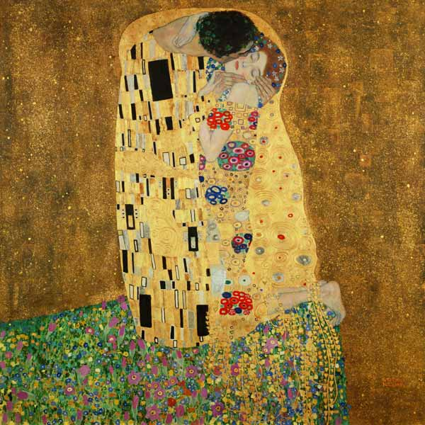
El beso
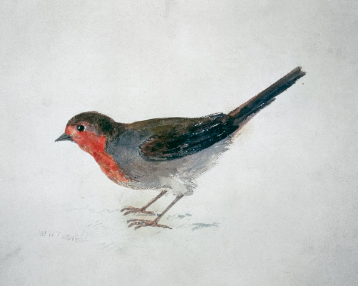
Petirrojo
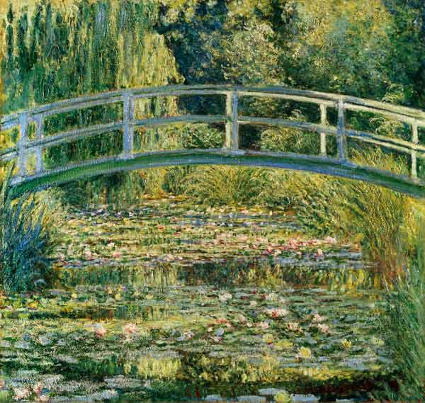
Estanque de nenúfares
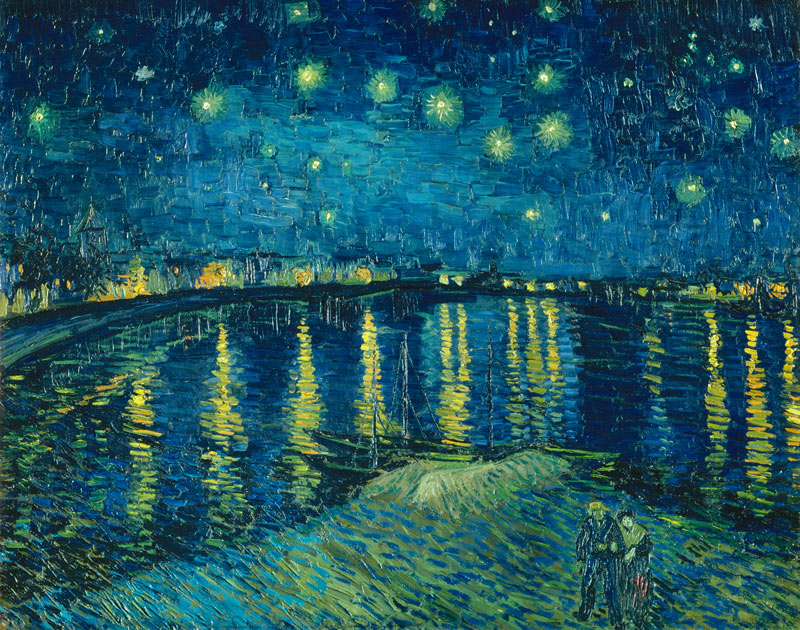
La noche estrellada sobre el Ródano
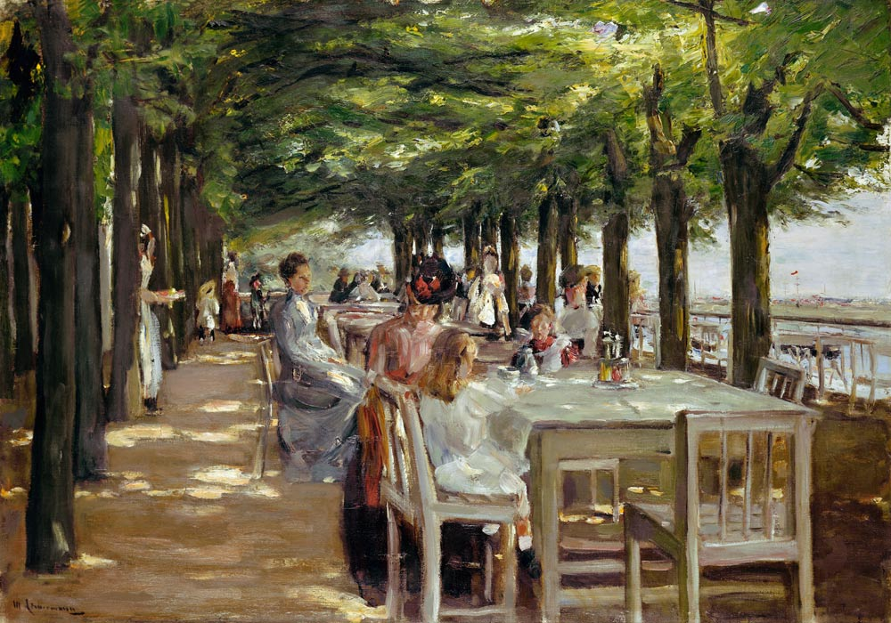
Restaurante Jacobo en Nienstedten, cerca del Elba
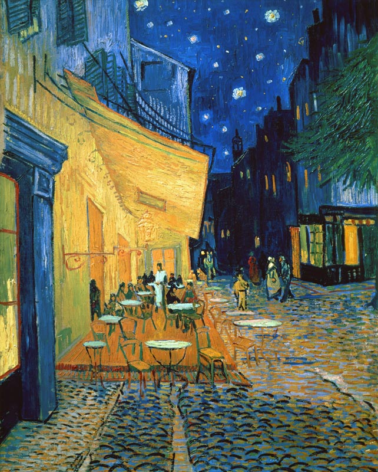
Terraza de café por la noche
No encontramos cuadros con esa búsqueda.
Los estilos que manejamos son muy variados. Entre ellos están:
Las obras clásicas que presentamos aquí pueden ser de dos tipos:
El proceso de compra empieza en esta página, una vez hayas escogido el cuadro o los cuadros que te gustan:
Cuéntanos qué cuadros tienes en mente y compártelos con nosotros. Puedes encontrarnos en nuestras redes sociales: